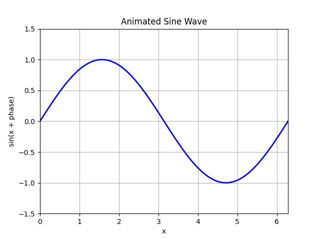

To include images in your Atomic Learning content, you can use the HTML <img> tag. Image files should typically be placed in the resources directory in the root of the repository. This means the value passed to the src attribute of the <img> tag should be a relative path to the image file within that directory, such as resources/image_name.png
You can control the size of an image using the width and height attributes within the <img> tag. For reference, the width of text on a content page is around 750 pixels, so the value passed to width should be less than or equal to this value.
When choosing dimensions, a height should be chosen such that the image fits within the window of a typical browser window. As a guideline, a height of 600 or less should be used.
If both height and width are specified, make sure they preserve the aspect ratio of the original image.
Images will be automatically centred horizontally relative to the margins of the test on the page.
Images are automatically styled by the Atomic Learning page so you should not set the style attribute of the <img> tag.
<img src="resources/my_image.png" width="750" height="500">
Gifs can also be included by using the same <img> tag with a src attribute pointing to the gif file:
<img src="resources/animated_sine.gif" width="750" height="500">which produces:

If you would like to see the entirety of the repository used to create this page as an example, you can find it here.